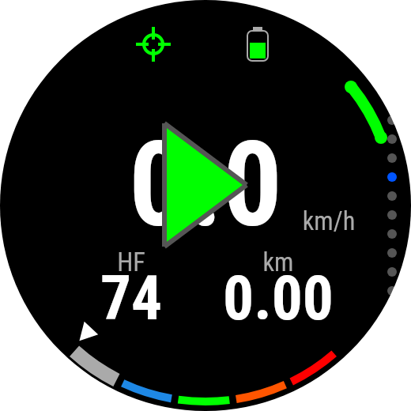
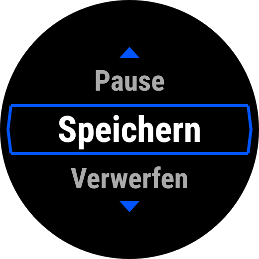
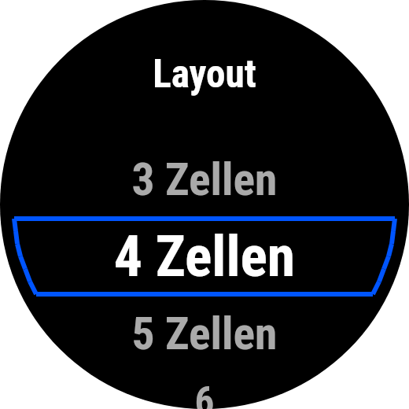
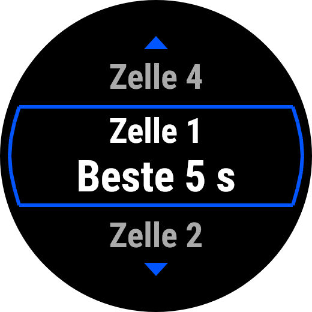
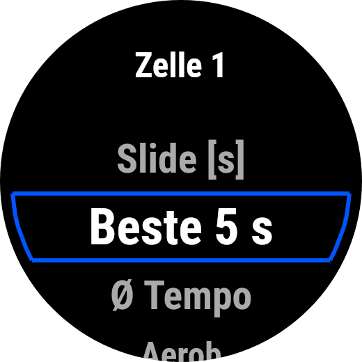
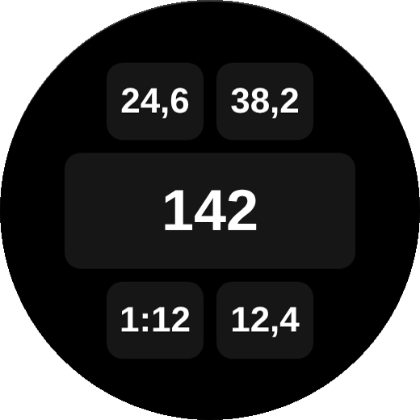

User guide · Garmin Connect IQ · Windsurfing, Wing Foiling and Surfing
Guide revision V15 · Updated: 27 November 2026
Help develop SurfsApp
Would you like to support development or request a particular feature? Sanitized FIT files from real sessions help improve sport specific functions and develop new features, such as detecting specific manoeuvres. Remove personal information first using the FIT Privacy Cleaner. The option to send me the sanitized FIT file directly will be added to the FIT Privacy Cleaner.
1 Overview and sports
SurfsApp records windsurfing, wing foiling and surfing as separate sports. Each sport has its own settings, metrics and display pages. This keeps planing time and jibes separate from surfing paddling time or wing foiling jumps.
Windsurfing Planing, jibes, tacks, wave rides, slides, jumps and loops. Details are provided in this guide.Wing foiling Speed, distance, riding states, manoeuvres and dedicated jump analysis. Go to the wing foiling guide.Surfing Sitting, paddling, ride time and waves. Go to the surfing guide.
The recording is saved as a Garmin activity. You can see live metrics on the watch and a summary after saving. The SurfsApp web app supplements this data with maps, charts and sport specific detailed analysis.
Select the three sports on the home screen. Under Settings → Sports you choose which sports are available there. Settings for one sport do not change the settings for another.
The images in this guide show a round watch with a 260 × 260 pixel display. Font sizes and spacing may vary slightly between watch models. The values shown are examples.
2 Controls
Button operated watches (fēnix)
Control
Function
START/STOP
Select, confirm and start recording. During recording: open the action menu.
UP / DOWN
Move through lists, change values and browse pages during recording.
Hold UP
Open Settings, including during recording.
BACK
Go back one level. On the home screen, it exits the app. During recording, it sets a marker.
Touchscreen
The touchscreen is not used. Water droplets do not trigger any actions.
Touchscreen watches with two buttons
Control
Function
Upper button
Select, confirm and start recording. During recording: open the action menu.
Lower button
Go back one level. On the home screen, exit the app. During recording: set a marker.
Swipe up / down
Browse lists and pages, including during recording.
Swipe left / right
Browse pages only during recording and while paused (left = forward, right = back).
Tap
No function. Selection is always made with the upper button.
Long press on the screen
No function. Settings are available as a separate “Settings” item on the home screen and in the action menu.
During an active recording, the screen is locked. Only swiping to browse pages is possible. The screen is unlocked in sport selection, in the preview and during a manually set pause.
In every list, the selected item appears in the centre with a blue border, with the adjacent items shown in grey above and below. Blue arrows on short lists indicate that more items are available in that direction. Lists loop continuously: the first item follows the last.
3 Home screen and preview
Home screen Select a sport. “Last session” appears as soon as an analysis has been saved.

Preview Green triangle: recording has not started yet. The green arc points to the START button.
Use UP and DOWN to select Windsurfing, Wing Foiling or Surfing. Choose which sports are shown under “Sports”. When a saved analysis is available, “Last session” is also displayed. On the vívoactive 4, “Settings” is shown as well. If only two entries are available, the version number and any messages appear below them.
Select a sport and press START. The preview opens. Nothing is recorded yet.
You can browse all pages in the preview. After the compass, the “Totals” page shows the totals for all saved sessions in that sport.
Press START to begin recording. BACK returns to sport selection.
Check the settings under Mode. Some settings determine which fields are included in the activity and therefore only take effect from the next session onwards (Section 7).
If the watch has enough storage for only a shorter recording than usual, the preview displays a message showing the available recording time. Press any button to close it.
4 Recording
Action menu

Action menu Press START during recording to open it.Confirmation For Save and Discard, “No” is selected by default.
During recording, START/STOP opens the action menu. You can pause, resume, save or discard the session, or open Settings. Available menu items vary by watch model.
Action
What happens?
Pause
Pauses the recording. Resuming continues the same session.
Resume
Resumes a paused recording.
Save
Ends the recording and saves the activity.
Discard
Ends the recording without saving an activity.
Settings
Opens Settings on supported watch models.
When saving or discarding, a confirmation prompt appears. Use UP and DOWN to choose Yes or No. No is selected by default. START confirms; BACK returns.
Pause
Windsurfing and wing foiling can be paused manually or automatically. With Automatic the watch pauses recording when speed remains below Pause below for longer than the configured time. As soon as Resume speed is reached again, recording resumes. With Manual you control pausing and resuming yourself.
For Surfing recording is paused manually only. Waiting time between waves therefore remains part of the session. The surfing guide explains the different thresholds and how surfing time is classified: Surfing guide.
Saving detailed recordings
When you use a detail level such as Visu for windsurfing or wing foiling, the watch records additional motion data. Saving may therefore take longer than for a standard GPS recording. Allow the save process to finish completely if you want to keep these details. The watch indicates when data is still being processed.
Marker
When markers are enabled, press BACK during recording to set one, for example after a particularly good ride or jump. The watch confirms it with two short vibrations. Markers cannot be set while paused. They can later be found on the map and in the charts in the web app.
Settings during recording
Settings can also be opened during a recording. Some changes only take effect in the next session because the watch prepares the additional data at the start. If the watch displays Applies to next session, the current recording remains unchanged. Therefore, set important detection modes and thresholds before starting whenever possible.
When the watch splits a recording
For particularly long recordings or when free storage is limited, the watch may automatically split a session into several activities. The watch indicates the change and then continues recording. In Garmin Connect, the parts appear as separate activities. After syncing, check that all parts have been transferred.
5 Pages during recording
Use UP and DOWN to browse the available pages. The dots on the right show your current position. Custom pages have a blue dot. Which pages appear depends on the sport and the enabled modes.
Sport
Pages and content
All sports
Main page with time, speed, heart rate and distance, followed by Maxima and Compass. The totals for all saved sessions appear in the preview.
Windsurfing
Waves and wave rides, ride details with Wave Ride Visu, the Loop page and list, and the Jump list. These pages appear when data is available.
Wing foiling
Downwind page and Jump list. With Learning mode and Downwind enabled, you can manually mark a downwind section with BACK. The page itself does not count downwind runs automatically and may therefore show placeholders. See the Wing foiling guide.
Surfing
SURF LIVE, WAVES, TURNS and SURF SESSION. The surfing pages are explained individually in the Surfing guide The TURNS page does not yet show separate turn or slide metrics.
Main page Time, speed, heart rate, distance and heart rate zone arc.Pause AUTO or the pause symbol appears at the top. Speed is replaced by Vmax.Maxima Maximum speed, heart rate and sport specific personal bests.Waves while windsurfing Most recent ride and its turns.Downwinds while wing foiling Dedicated page. Unavailable values are shown as dashes.Loops Most recent loop and available detailed metrics.Compass Heading and, when available, wind direction.Totals Totals for all saved sessions in this sport. Preview only.
Lists for wave rides, loops and jumps
Wave rides Average speed, duration and detected turns.Loops Detected loop type and rotation.Jumps Jump height and airtime.
The lists appear only after at least one event has been detected. They show the most recent entries. The complete session analysis is available after saving.
6 Custom pages
In addition to the fixed pages, you can configure two custom display pages for each sport. Windsurfing, wing foiling and surfing each have their own configuration. Changes to windsurfing pages do not affect wing foiling or surfing pages.
Setup
Open the settings for the sport you want and select Pages. Then open Page 1 or Page 2.
Enabled turns the page on or off.
Layout determines whether one to six values are shown at the same time.
Position sets whether the page appears after the main page, Maxima or Waves for windsurfing and wing foiling. For surfing, the position is fixed.
Field assignment opens the data field selection for each cell.
Pages menu Enable or disable custom pages.Page settings Enabled, Layout, Position and Field assignment.

Layout One to six cells.

Field assignment Choose a data display for each cell.

Select data field The selection adapts to the sport.
Layouts
One cell One large value.Two cells Two values stacked vertically.Three cells One value at the top, two below.Four cells Two column grid.

Five cells Five values without labels.Six cells Six values without labels.
The first cell is shown in green and the second in blue. With five or six cells, labels are omitted to keep the values easy to read.
7 Settings
On watches with five buttons, hold UP to open Settings. On the vívoactive 4, select the Settings item on the home screen: Settings. During a recording, you can also open Settings via the action menu or by holding the button, depending on the watch model.
The menus are separated by sport. Select the required sport on the home screen and open its settings. Each sport has the following sections: Mode, Defaults, PagesandIQ fields. Dadurch bleiben die Einstellungen übersichtlich und verändern nicht versehentlich eine andere Sportart.
Section
Purpose
Sports
Determines which sports are available on the home screen.
Pause
For windsurfing and wing foiling: Manual or Automatic. Surfing uses manual pause only.
Mode
Enables or disables sport specific detection and selects its detail level. The differences are explained in Sections 8 and 9.
Defaults
Contains the speed thresholds and pause settings for the selected sport.
Pages
Enables or disables fixed sport pages and custom pages.
IQ fields
Selects which additional metrics are saved in the activity as Garmin Connect IQ fields.
System
Language, Connect fields, markers and battery chart.
Important thresholds
Sport
Setting
Default value
Description
Windsurfing and wing foiling
Resume speed
5.5 km/h
The speed at which recording resumes after an automatic pause.
Windsurfing and wing foiling
Planing threshold
11 km/h
From this speed onwards, time is counted as planing.
Windsurfing and wing foiling
Pause below
5 km/h
With Automatic pause, the speed below which a pause can begin.
Windsurfing and wing foiling
Pause after
15 seconds
How long speed must remain below the threshold before recording pauses.
Surfing
Planing threshold
6.5 km/h
From this speed onwards, time is counted as ride time.
Surfing
Paddling threshold
2.5 km/h
From this speed onwards, time is counted as paddling time. Below it, time is counted as sitting time.
For surfing, the following settings are also available: Turn rateandTurn angle They determine how pronounced a turning movement must be to be included in wave detection. The defaults are 25 degrees per second and 45 degrees.
Changes to thresholds or recording modes may only take effect from the next session. In that case, the watch displays the message Applies to next session. Recordings already in progress keep their original data settings.
Settings can also be accessed during recording. Make changes before starting whenever possible, so you do not accidentally change the recording detail level during a session.
8 Detail levels and IQ fields
For several detection features, SurfsApp offers three levels. They determine how much data the watch records during the session and how deeply you can analyse it afterwards.
Level
What it means
When to use it
Off
The sport specific detection feature is disabled. Standard GPS, speed, distance and heart rate data continue to be recorded.
When you do not need the feature or prefer a basic recording.
Connect
The watch detects and counts events and saves the key metrics in the activity. The data can appear in Garmin Connect and in SurfsApp analysis.
For a useful overview with counts and personal bests.
Visu
In addition to the metrics, extended motion data is recorded. This enables more detailed views in the web app, where the sport supports this analysis.
When you want to examine a manoeuvre or jump in more detail later.
Important: Visu is the most detailed level. It generates more data and may increase saving time after the session. Depending on the combination, fewer additional IQ fields may be available. Enable Visu before recording if you want detailed analysis. Data that was not recorded during the session cannot be reconstructed afterwards.
Which levels are available for each sport?
Sport and feature
Connect
Visu
Off
Windsurfing: Wave ride
Counts wave rides, turns and metrics.
Also records board direction and slide details for later analysis.
No wave ride display on the watch. The web app can still derive rides from the GPS track.
Windsurfing: Jump
Counts jumps and displays height and airtime.
Additional motion data for detailed jump analysis.
No jump detection.
Windsurfing: Loop
Counts loops and distinguishes their type where possible.
Additional measurement data for spatial loop analysis.
No loop detection.
Wing foiling: Jump
Counts jumps and saves metrics.
Additional measurement data for later jump analysis.
No jump detection.
Surfing: Wave ride
Detects wave rides based on speed and movement.
Records additional motion data. The separate TURNS page still does not currently display turn or slide metrics.
No wave ride counting on the watch.
IQ fields and custom pages are not the same
Custom pages display values live on the watch during recording. IQ fields are also stored in the saved Garmin activity and may appear in Garmin Connect. The web app calculates additional metrics from the FIT file and the recorded motion data.
IQ fields can be selected separately for each sport. Typical groups include speed, manoeuvres, activity states, wave rides, jumps and loops. For surfing, the available values instead cover riding, paddling and sitting. Select only the metrics you actually need in Garmin Connect. The watch indicates when a selection is incompatible with the chosen detail mode.
Garmin limits the number of additional IQ fields to 16 per activity. Some detail modes use slots for their own measurements. As a result, fewer additional fields may be available when several detail modes are enabled at the same time. The IQ field selection shows how many values are selected and how many slots are available. IQ fields that were not saved will not appear in Garmin Connect. SurfsApp analysis is independent of this limit.
9 Windsurfing: wave rides, jumps, loops and markers
Wave rides
The watch detects wave rides automatically. Under Windsurfing → Mode → Wave ride select the detail level.
Level
Result
Connect
The watch counts wave rides and turns. A turn consists of a bottom turn followed by a cutback. The analysis shows, among other things, the best ride, speed before and after turns, and waves per run.
Visu
Adds board direction and slide analysis to the Connect metrics. The Ride Details page also appears on the watch. In the web app, you can examine the course of a ride and the slides for each turn in more detail.
Off
The wave ride pages and on watch counting are disabled. The web app can still derive wave rides from the GPS track, but cannot display additional motion details.
A Slide is a pronounced sideways movement of the board during the cutback. The watch derives board movement from arm movement. If you change your grip during the ride, the direction may therefore differ. Visu provides the data required for this detailed analysis.
Jumps
A jump is a leap without a loop. SurfsApp calculates the count, estimated height and airtime. Under Windsurfing → Mode → Jump you can choose Connect, Visu or Off.
Jump threshold sets the minimum height for a jump to be counted. The default is 0.3 m. This allows you to filter out small hops. Height is calculated from motion data and is not a direct altitude measurement.
Loops
Loops are recorded separately from regular jumps. The watch distinguishes front loops, back loops and double forwards. If the classification is uncertain, the generic label Loop is used.
Loop Connect counts loops and saves the key metrics. Loop Visu adds measurement data for spatial analysis in the web app. Under Advanced Loops additional motion details for more advanced loop types can be recorded when Loop Visu is enabled.
Loop and Jump priority
The setting Priority prioritises writing detailed loop and jump data. This can reduce the time required to save. However, fewer slots remain available for other additional IQ fields. Use this setting when detailed jump analysis matters more to you than having the widest possible selection of Connect metrics.
Marker
Press BACK during recording to set a marker, for example for a particularly good ride or a jump. The watch confirms the marker with two short vibrations. Markers can later be found on the map and in the charts in the web app. You cannot set a marker while paused.
The sport specific features for wing foiling and surfing are explained separately in the wing foiling guide and the Surfing guide guide.
10 Analysis in the web app
The watch saves each session as a Garmin activity. For a detailed analysis, open the SurfsApp web app and select the recording you want from the session list. The web app supplements the brief watch summary with maps, timelines and sport specific detailed views.
Main sections
Section
What you will find there
Sessions
Your saved recordings with date, sport and key metrics. You can filter by sport and date range, mark favourites and add your own comments.
Map
The GPS track. Depending on the view, colours indicate speed. Markers help you find specific points in the session again.
Numbers
Times, distances, speed, heart rate, personal bests and sport specific metrics. Not every metric applies to every sport.
Charts
Trends over time or distance, such as speed and heart rate. Additional data series appear when the watch recorded them using the selected detail level.
Detailed analysis
Wave rides, slides, jumps, loops and Wing Foiling Learning Mode, with maps, lists and measurement timelines where the required data is available.
On narrow screens, the sections are available as tabs along the bottom: Sessions, NumbersandCharts In the desktop view, the content is arranged in wider panels. You can switch between the two layouts in the web app.
Why some details are missing
The web app can analyse the GPS track, speed, time and heart rate even without Visu. High resolution motion data for slides, jumps or loops must be recorded during the session using the appropriate mode. If this data is missing, the web app will not show the corresponding detailed view or will mark it as unavailable.
For surfing, ride time, paddling time and sitting time are shown separately. For wing foiling, jump metrics and, with Learning mode enabled, additional arm movement data are available. A detailed downwind analysis is not generated automatically from a standard GPS track.
11 Data fields for custom pages
The available data fields for custom watch pages depend on the selected sport. This lets you keep the most important metrics in view during your session.
Sport
Examples of data fields
Windsurfing
Speed, maximum speed, average speed, heart rate, distance, time, planing, jibes, tacks, wave rides, slides, jumps and loops.
Wing foiling
Speed, maximum speed, heart rate, distance, time, riding states, manoeuvres and jump metrics.
Surfing
Speed, maximum speed, heart rate, distance, ride time, paddling time, sitting time and wave metrics.
Select a data field in the custom page configuration. If a value is not available for the selected sport or cannot yet be calculated during the session, the watch displays two dashes instead of a misleading zero.
12 Supported watches
SurfsApp runs on Garmin watches with Connect IQ. Operation depends on whether the watch has five buttons or is a touchscreen model with two buttons. Both control methods are described in Section 2.
Button operated watches
Controlled using the buttons; the touchscreen is not used.
fēnix 5 Plus, 5S Plus, 5X Plus
fēnix 6 Pro, 6S Pro, 6X Pro
fēnix 7, 7S, 7X
fēnix 7 Pro, 7S Pro, 7X Pro (including Solar models without Wi-Fi)
fēnix 8 (43 mm, 47 mm, 51 mm), 8 Pro, 8 Solar
fēnix 9, 9 Pro, 9 Pro Solar
fēnix E
epix (Gen 2), epix Pro (Gen 2) 42, 47 and 51 mm
Forerunner 165, 165 Music
Forerunner 255, 255S, 255 Music, 255S Music
Forerunner 265, 265S
Forerunner 570 (42 mm, 47 mm)
Forerunner 955, 965, 970
Instinct 3 AMOLED (45 mm, 50 mm)
Touchscreen watches with two buttons
Controlled using swipes and the two buttons.
Venu 3, Venu 3S
Venu 4 (41 mm, 45 mm)
vívoactive 4, 4S
vívoactive 5
vívoactive 6
The display adapts to the watch screen size. The images in this guide show a round watch with a 260 × 260 pixel display.